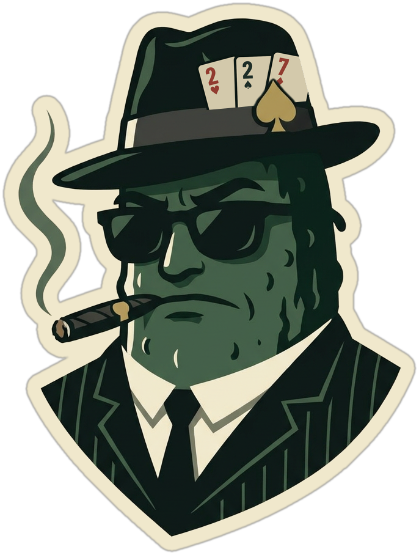

RUNDAN KLAR
RUNDA 1 · MULTIPLIKATOR ×10
Du förlorade rundan. Du hade högst slutvärde (13) och betalar 13 × 10 = 130 kr till var och en av de 3 andra (390 kr).
Axel
slutvärde 13
−390 kr
Saldo: −400 kr · gick ut på K
Bot Greta
slutvärde 4
+130 kr
Saldo: +130 kr · gick ut på 4
Bot Sixten
slutvärde 4
+130 kr
Saldo: +140 kr · gick ut på 4
Bot Bengt
slutvärde 3
+130 kr
Saldo: +130 kr · gick ut på 3
SLASK: Axel (7,6,6,3,A) synad av Bot Sixten · 1 klätt kort · 10 kr